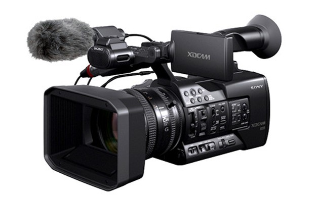
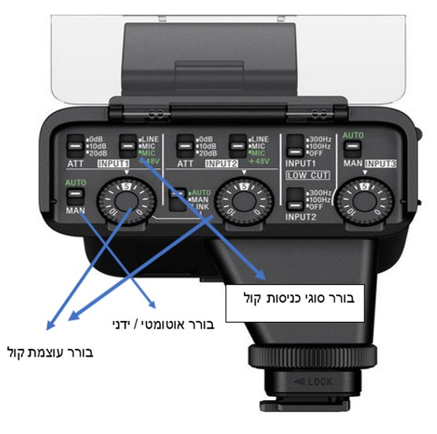

המצלמה מקליטה בעיקר תמונה אך גם קול. אם המצלמה היא המכשיר שמקליט את הקול, יש לדעת כיצד לכייל את גובה ההקלטה ומספר הערוצים, ולהכיר היטב את תפריט הקול במצלמה.
המצלמה משמשת בעיקר את הצלם בהקלטת התמונה, אך יכולה לשמש גם כמכשיר הקלטה. הקול מוקלט על כרטיס שנמצא במצלמה ומסונכרן עם התמונה.
רוב המצלמות יכולות להקליט קול ממקור קול פנימי (מיקרופון מצלמה) או ממקור קול חיצוני. הבחירה להקלטה זו נמצאת או בתפריט המצלמה או על מפסק שנמצא על גבי פנל חיצוני.
בדרך כלל המצלמה מקליטה שני ערוצי קול ch-1 או ch-2.
ניתן להקליט בהפרדת ערוצים גם ממקור קול חיצוני או פנימי.
כיוון גובה עוצמת ההקלטה יכול להיות אוטומטי או ידני.
במצב אוטומטי: ערוצי הקול יוקלטו במצלמה באותה עוצמה, כלומר, אם מקור הקול יהיה חלש המנגנון האוטומטי במצלמה יגביר את עוצמתו לרמה של 20dB-.
במצב ידני: איש הקול קובע את גובה עוצמת הקול שנכנס למצלמה בכל ערוץ על ידי מכווני הקול שנמצאים על פנל הקול.
מכוון שליטה על עוצמת הקול בהקלטה ובשמיעה.
חיבור אוזניות למצלמה לשמיעת הקול הנכנס.
חשוב לזכור ולדעת: עוצמת הקול הנשמעת באוזניות אינה עוצמת הקול שנקלטת במצלמה.
כניסות XLR משמשות לחיבור מיקרופונים במצלמה, או כבל צמה כאשר עובדים עם מערבל קול.
התלמיד חייב להכיר את תפריט הקול במצלמה (שונה בכל מצלמה ומצלמה).
יש לזכור כי מי שמחזיק את המצלמה הוא הצלם, והוא אינו אחראי על עוצמת הקול. תפקידו של איש הקול לבדוק אחרי כל הקלטה את איכות הקול ולוודא שהקול הוקלט כפי שהוא רצה.
הטיימקוד משמש את איש הקול כדי לסנכרן את הקול עם התמונה בהקלטה עם מכשיר הקלטה חיצוני.